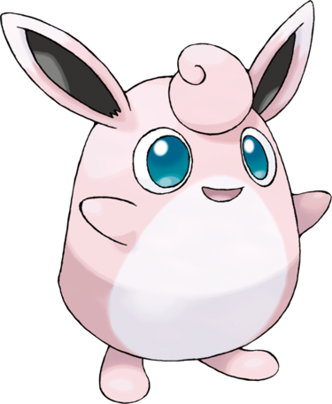

Grodoudou ressemble à une grosse peluche rose aux oreilles de lapin. Il possède deux grands yeux bleus ainsi qu'une large houppette sur le front. Il possède deux courts bras, et de petites jambes terminées par deux longs pieds. Son ventre est recouvert d'un duvet blanc.